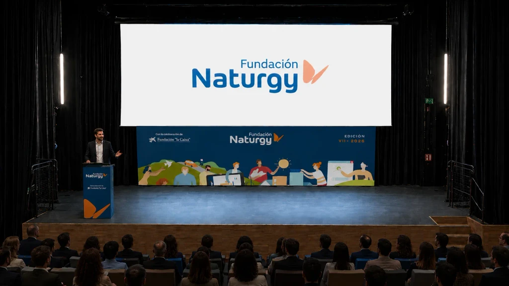
Naturgy
Diseño del evento corporativo celebrado en Valencia para reconocer a entidades e iniciativas de energía e impacto social por su contribución a la zona tras la DANA.
¿Quién diseña la marca y también el stand?
Estudio creativo. Marca, espacios, 3D, vídeo, marketing e inteligencia artificial, de la idea a la pieza terminada.
Base en Madrid.
Proyectos en toda España.
P.¿Qué hacéis?
Diseñadores, especialistas en marketing y programadores a vuestra disposición, con un único interlocutor. Sin coordinar a seis proveedores distintos.
Identidades que se reconocen, piezas que se entienden a la primera y páginas web que funcionan.
Diseñamos el espacio y lo enseñamos en 3D antes de que se construya.
Del render al objeto: modelos revisados y listos para imprimir.
Montamos el material para que se vea entero, en redes o en pantalla grande.
Estrategia y contenido para que la marca tenga algo que decir cada semana.
Asistentes que responden a vuestros clientes con la voz de la marca.
+ ¿Lo necesitáis todo a la vez? Mejor. La gráfica y el espacio del mismo evento salen de la misma mesa: del concepto al espacio.
P.¿En qué habéis trabajado?
Cuando el encargo llegó a través de una agencia, lo indicamos con «vía».

Diseño del evento corporativo celebrado en Valencia para reconocer a entidades e iniciativas de energía e impacto social por su contribución a la zona tras la DANA.
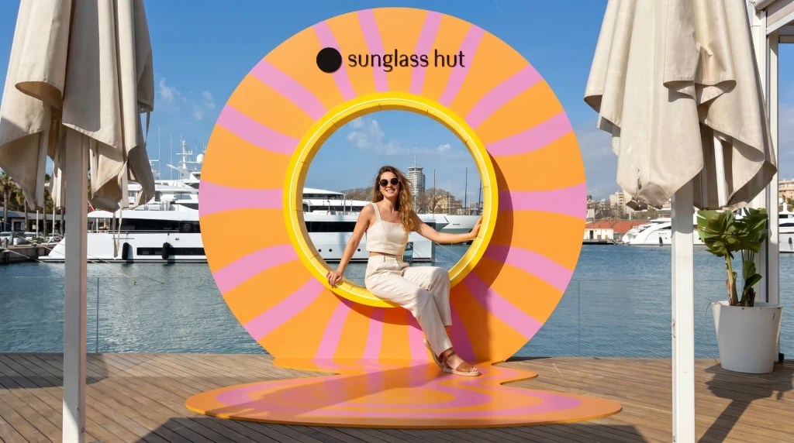
Evento en Barcelona para presentar las nuevas colecciones a creadores de contenido: un espacio de marca pensado para descubrir el producto, relacionarse y grabar.
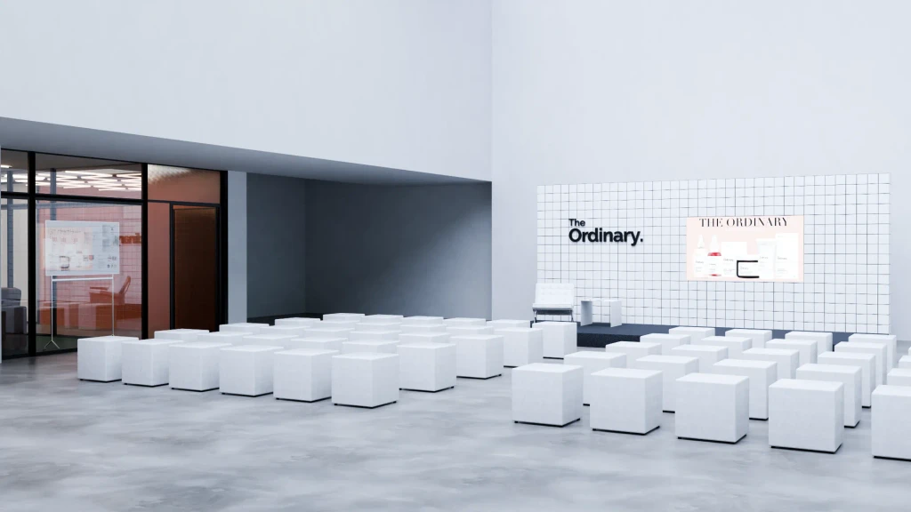
Una de las primeras grandes activaciones de la marca en España. Llevamos su estética de laboratorio al espacio: clínico, mínimo y completamente blanco, del diseño general al último detalle.
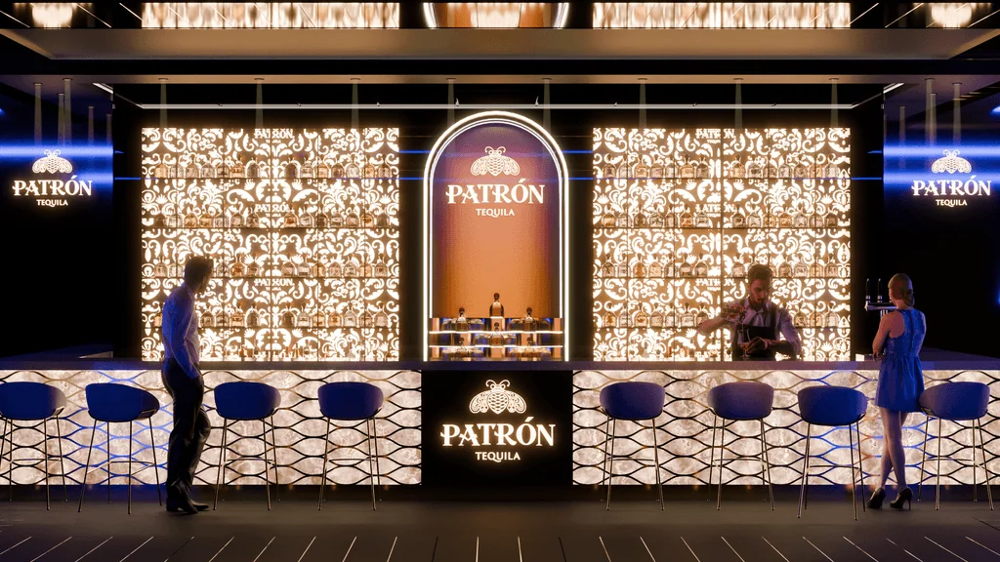
Intervenciones de marca en clubs nocturnos: elementos luminosos, materiales prémium y detalles arquitectónicos que se integran sin invadir la identidad del local.
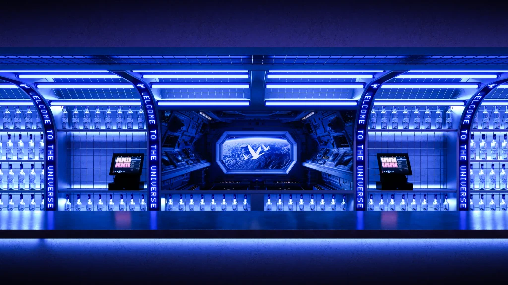
Serie de intervenciones en clubs nocturnos que llevan la estética limpia y sofisticada de la marca al espacio: presencia elegante y discreta, sin alterar la atmósfera del local.
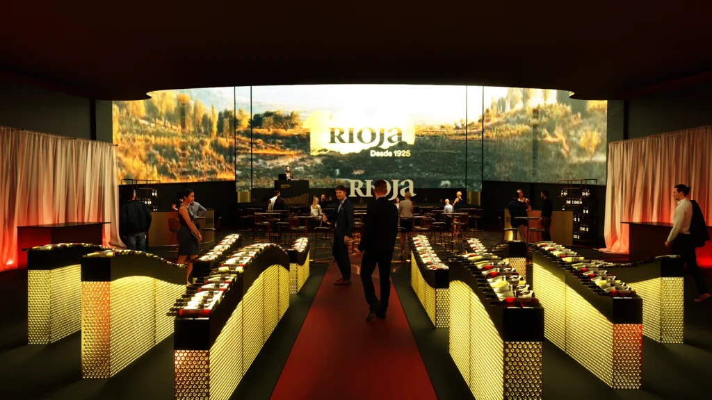
Dos eventos en las salas del Cine Callao y dos atmósferas opuestas: un lenguaje tecnológico y dinámico para Logiplay 2025 y un escenario cálido y sofisticado para el centenario de Rioja.
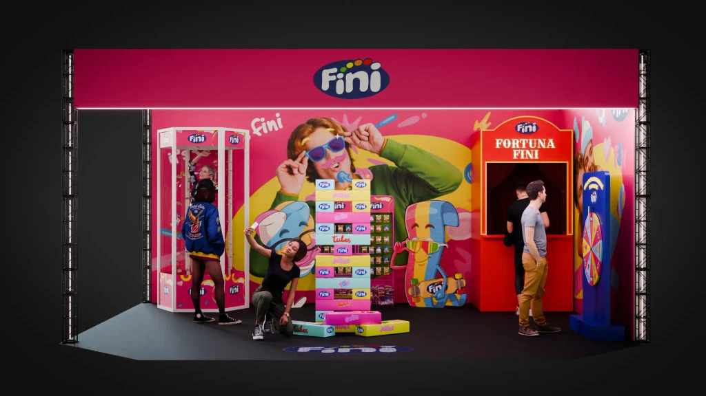
Stands de líneas limpias e iluminación precisa, pensados para atraer en segundos en entornos saturados y dejar que la marca se lea rápido. Clientes varios.
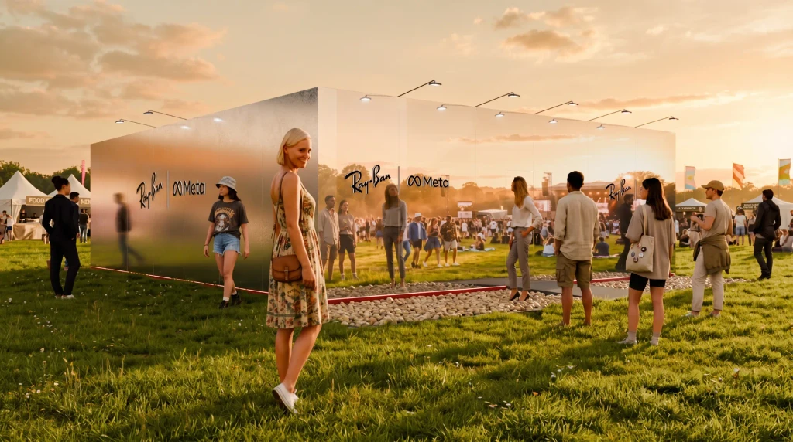
Propuestas para exterior que tratan la luz, el clima y el flujo de personas como variables vivas: estructuras ligeras, materiales honestos e iluminación que acompaña el ritmo del día. Clientes varios.
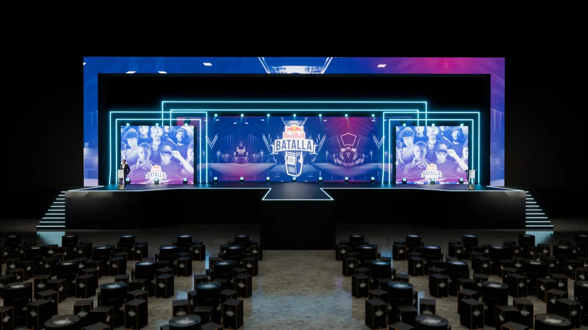
Escenografías, activaciones y eventos de distinta escala. Arquitectura efímera, iluminación y gráfica trabajan juntas para que el espacio acompañe sin robar protagonismo. Clientes varios.
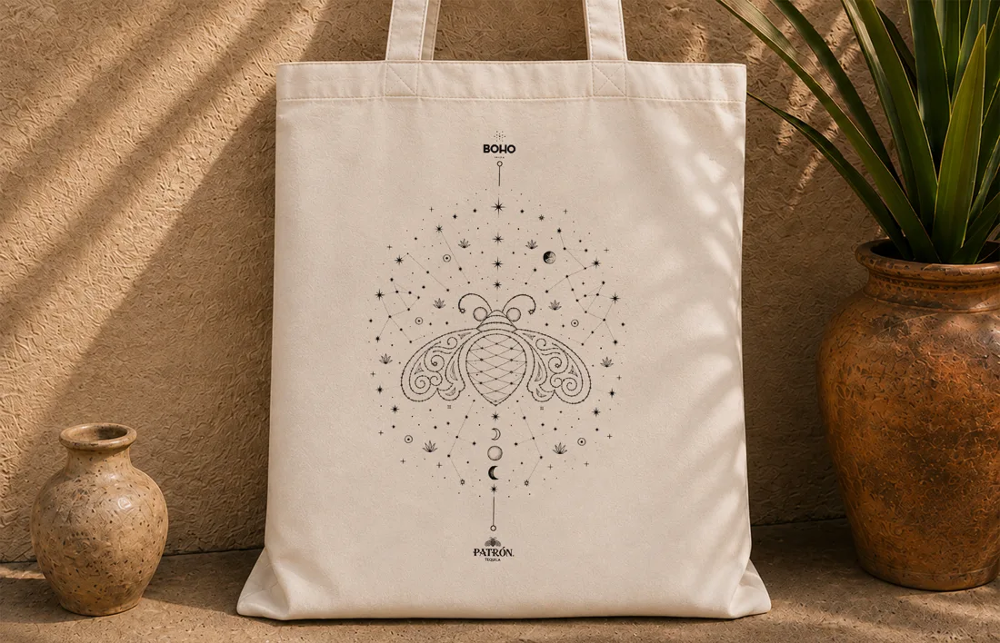
Colección de merchandising para Beach House Ibiza: los doce signos del zodiaco dibujados como cartas celestes, en una serie de láminas y aplicados a camiseta, tote bag y pañuelo.
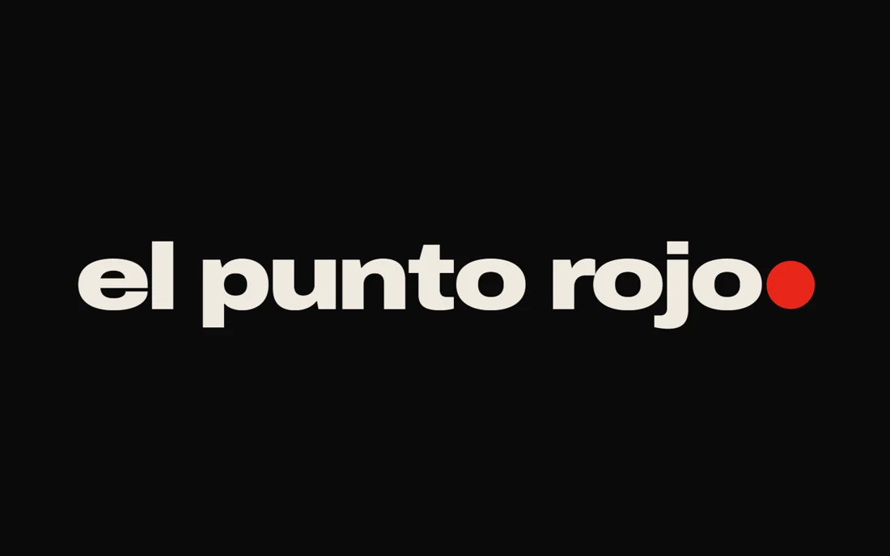
Identidad para un club que quería ser un sitio donde quedar, no otra discoteca. Un antiguo almacén de 900 m² y un sector lleno de clubes que se parecen entre sí. Los fundadores querían que se viniera por la música y por la gente. Convertimos el nombre en la idea: un punto rojo que cierra el logotipo, ilumina la fachada, marca la cabina y termina cada mensaje. Directo y sin adornos. Y punto.
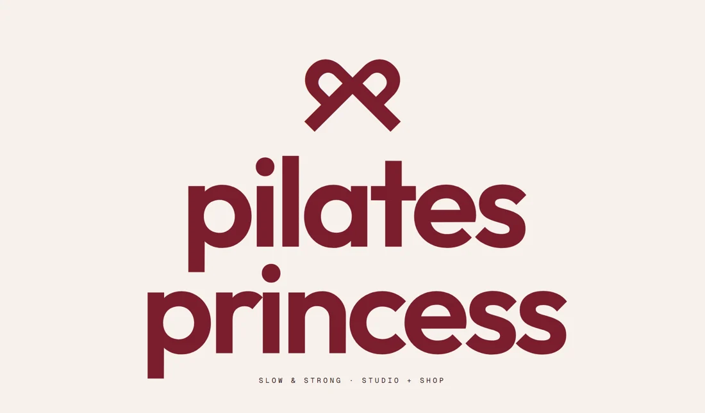
Identidad, redes sociales, merchandising y web con tienda online para un estudio boutique de pilates.
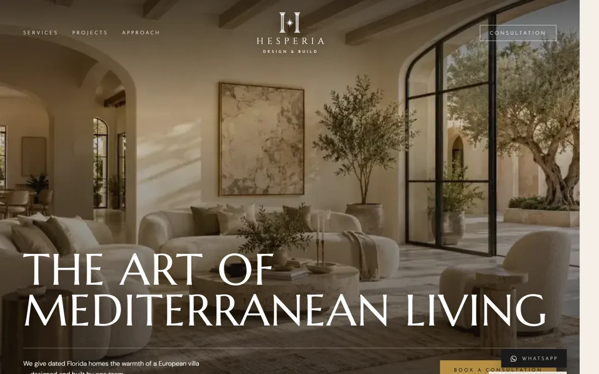
Web para un estudio de diseño y construcción que renueva casas en el sur de Florida con estilo mediterráneo, preparada para posicionar en buscadores y en las respuestas de los asistentes de IA.
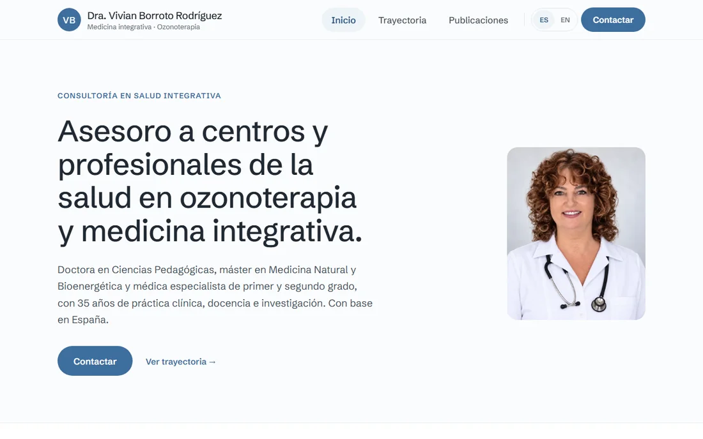
Web profesional para una doctora y consultora en ozonoterapia y medicina integrativa: presentación, trayectoria y una biblioteca de publicaciones con buscador, en español y en inglés.
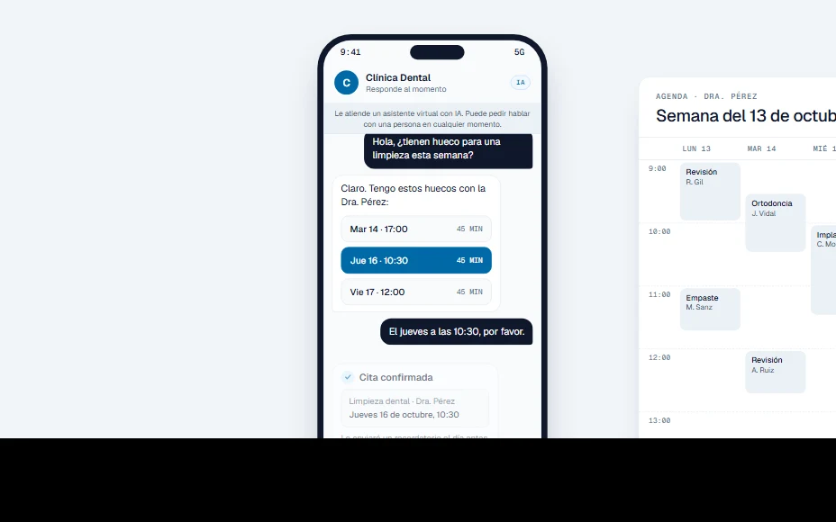
Un asistente por chat que reserva citas sobre la agenda real de la clínica y, tras la visita, recoge la opinión del paciente.
P.¿Trabajáis para agencias?
Un solo interlocutor y una sola línea creativa para todo lo que se ve en el evento, de la pieza gráfica al espacio construido.
Representación 3D para que vuestro cliente vea el espacio y lo apruebe antes de fabricar nada.
Base en Madrid. Trabajamos allí donde se celebre el proyecto.
P.¿Cómo empezamos?